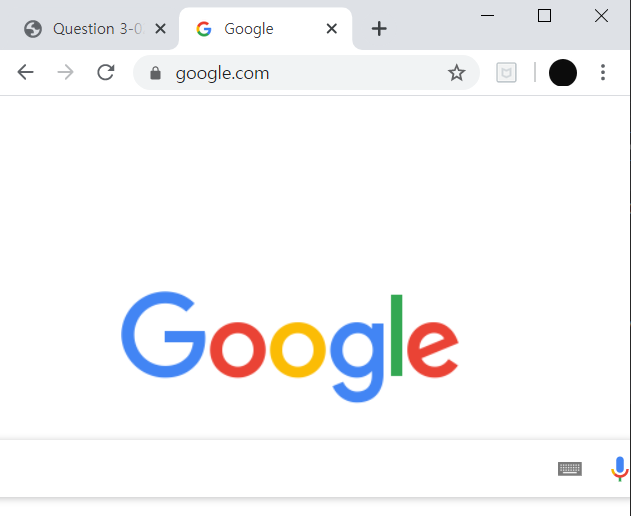
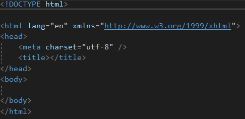

브라우저라고 불리기도 하는
웹 브라우저(Web Browser)는,
사용자에게 웹 서버 컴퓨터에 접속하고
웹 페이지, 이미지, 동영상, 음악 등
다양한 데이터 다운받아 보여주는 소프트웨어다.
그림 1-2는 대표적인 Chrome 웹
브라우저이다.
|
 그림 1-2 구글 Chrome |
|---|---|
웹 페이지는 브라우저에
HTML5 문서임을 알리기 위해
그림 1-3과 같은 코드를 첫 라인에
삽입해야 한다.
|
 그림 1-3 HTML5 문서 구성 |